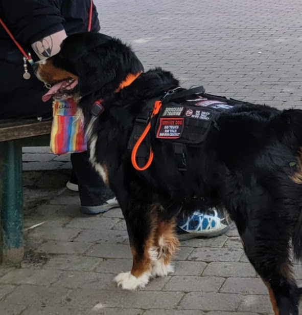
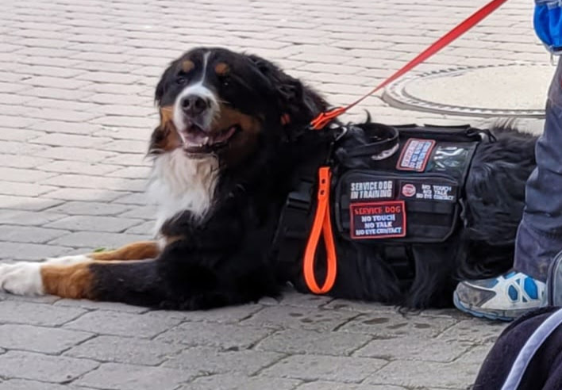
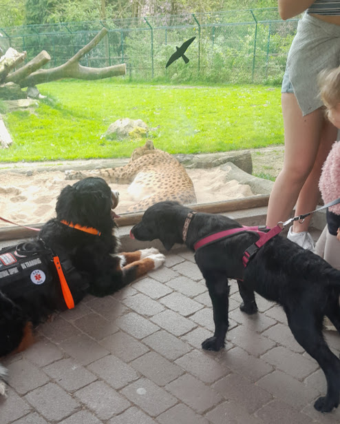

Beratungsgespräch - Ein Welpe zieht ein
Beratungsgespräch - Ein Welpe zieht ein
Was? Beratungsgespräch: Was ist zu beachten, wenn der Welpe ein Helferhund werden soll? Welche Rasse dürfen wir nehmen? Worauf müssen wir achten, wenn wir einen Hund aus dem Ausland als Helferhund ausbilden wollen? Diese und viele weitere Fragen können in einem ausführlichen persönlichen Gespräch geklärt werden.
Preis 100 € für 60min zzgl. Fahrtkosten

Hausbesuch
Hausbesuch
Was? Der Hundetrainer kommt zu Ihnen nach Hause und übt mit Ihnen dort, wo Sie mit Ihrem Hund gemeinsam leben.
Preis 70 € für 60min zzgl. Fahrtkosten

Einzelstunde
Einzelstunde
Was? Einzelstunde im Rahmen der Ausbildung zum Helferhund
Preis 70 € 60min zzgl. Fahrkosten

Workshops oder Blockunterricht
Workshops oder Blockunterricht
auf Anfrage